貝殻廟/彰化縣福興郷
台湾の中でも古くから開けた港町鹿港。古い町並みや寺廟で有名な街だ。
近郊には仏具屋が並んでいいたりして、古都っぽさムンムン。
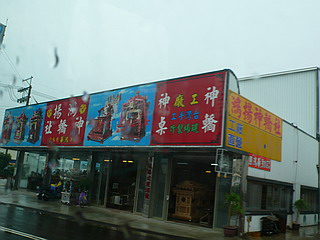
そんな鹿港の街の川向こう、復興郷は養殖用の溜池が多い。
折からの雨続き。溜池の水はあふれ、道路が所々寸断されている。
そんな水没した道なき道を進むと奇天烈な外観の建物が現れる。
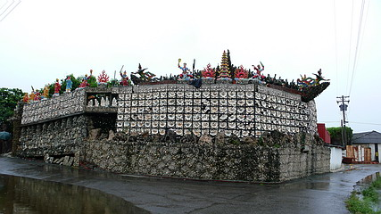
これが鹿港の裏名所、稀代のアウトサイダー建築、貝殻廟である。
この地で養殖業を営む黄奇春なる人物がひとりで30年以上かけて造った夢のパラダイスである。
壁面はびっしり貝殻で覆われている。
同じ大きさの貝を同じパターンで並べてあるので遠目には飾りタイルにも見えるが全部貝殻なのだ。
几帳面さが尋常ではない。緻密過ぎる事でアウトサイダー建築になってしまった好例ともいえる。
そして貝殻が並ぶ外壁の上には様々な神さまが雲上世界を楽しんでらっしゃる。
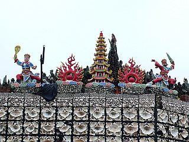 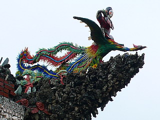
正面に回りこむ。
ムフォ！
貝とサンゴと石で出来た不思議すぎる造形。
これは台湾のシュヴァルですね。
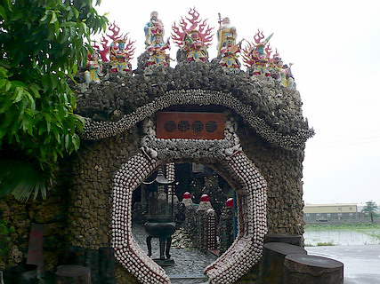
早速門を潜り中に入る。
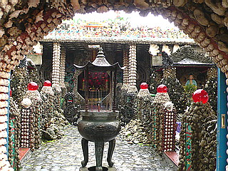
そこも小さな貝とサンゴと石が堆積されたハードコアなパラダイスガーデンであった。
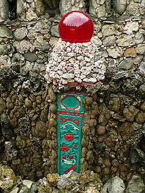
ふと左右の壁を見上げれば何故か黒パンに赤スカーフの方々が決めポーズをつけて並んでいる。
どう贔屓目に見たって、昔のドラマで「お前達！やっておしまいっ！」といったシーンに登場する「お前達！」にしか見えない。
で、ヒーローに秒殺されちゃうかわいそうな人達。
曲がりなりにも廟なのに何で「お前達！」が必要なのだろう？トニー☆ジャーでも殴りこみに来るのだろうか？
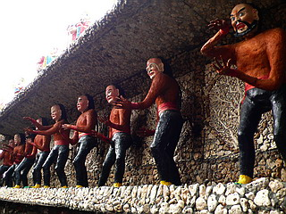 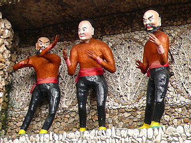
振り返るとこんな感じ。神さまよりも「お前達！」の方が多いのがポイントである。
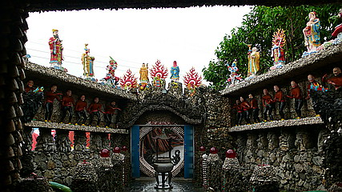
おお、すっかり「お前達！」にハートをわしづかみにされてしまった。
先へ進もうじゃないか。
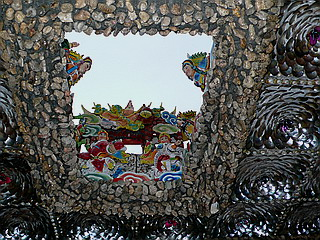
工法はコンクリの躯体に貝サンゴ小石を貼り付けていくもの。
世界あまたにある俺パラダイスのグローバルスタンダード工法である。
しかしよく見ると「手当たり次第貝殻を貼り付けりゃあいいんだろ！」といったナーバスブレイクダウン系装飾とは違い、壁や部屋ごとに貝殻の並べ方が統一されている。その辺の病的なまでの緻密さが逆に怖いんですけど…
特に内側の光った貝を重ね合わせて何層にも重ねあわせて巨大な牡丹の花のようにつくる技法の素晴らしさは、この建物が一時の思いつきではなく、実は緻密な計算によって造られていることを物語っている。
すっかり忘れていたが廟というだけに本殿があり、神さまが諸々と。前の方の神さま、そろそろ床屋に行ったら如何でしょう？
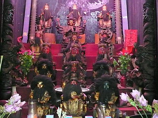
本殿は中央の祭壇のある部屋を取り囲むように回廊になっている。
そこも貝殻のモザイクで覆われた擬似海底世界。
回廊は丁度屋根と屋根の間になっているので擬似世界とはいえ雨でずぶ濡れ。
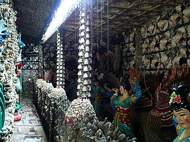
結局、ここで貝殻で作った神さまはひとつも見かけなかった。
この辺がこの貝殻廟のこだわりどころというかラインの引き加減なのだろうが、神像は全て陶器製である。
で、龍やら麒麟やらといった動物モノは貝殻でつくる。
これだけ造ったんだから貝づくしの福禄寿とかあってもいいと思うんですけど…
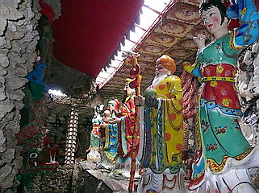 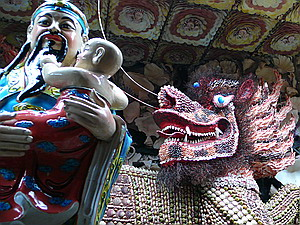
龍、麒麟はかなりの気合の入れよう。
かなりの種類と数の貝を駆使して脳内世界を表出させようとしている。
惜しむらくは薄暗く狭い回廊にあるのでびちゃびちゃしてました。
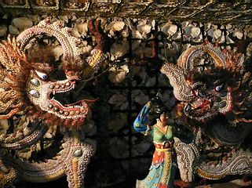 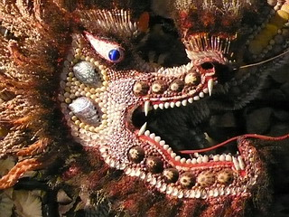
本殿の周りを一周し、再び祭壇へ戻る。
その脇に薄暗い開口部がある。
勿論、そこに歩を進めると…だア～！！
貝殻トンネル～、しかもポンチ目。
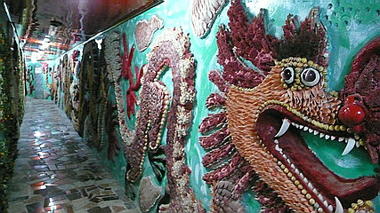
先程の勢いのある精緻な龍はどこへやら。
恐らくこの龍は比較的初期のもので先程の龍は最近のものなのだろう。
そのスキルアップした技術の変遷に黄氏がかけた30年という時間の長さが見て取れる。
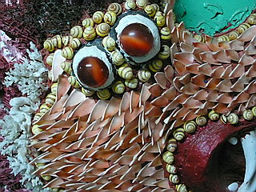 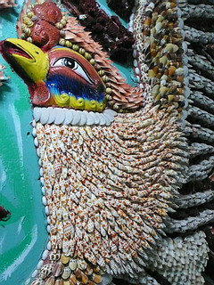
ちなみに貝殻自体には一切色は塗っていないそうだ。
その辺も黄さんのこだわりなのだろう。
赤が欲しけりゃ赤の貝、青が欲しけりゃ青の貝、金が欲しけりゃ金の貝を探すんです！
黄さんの特濃脳内世界を体現した見事な黄印…あわわ…黄氏印の洞窟であった。
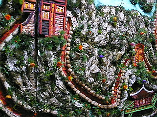
貝殻廟その2へ
台湾大佛列伝3
珍寺大道場 HOME